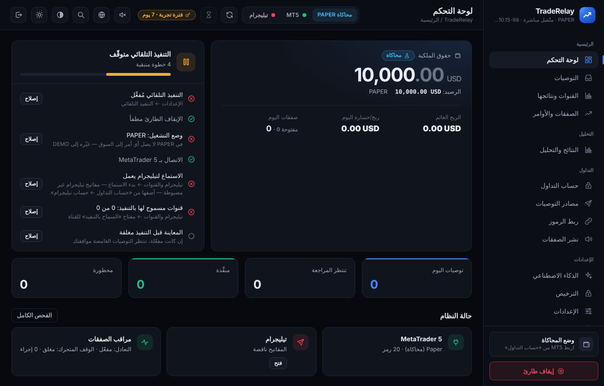
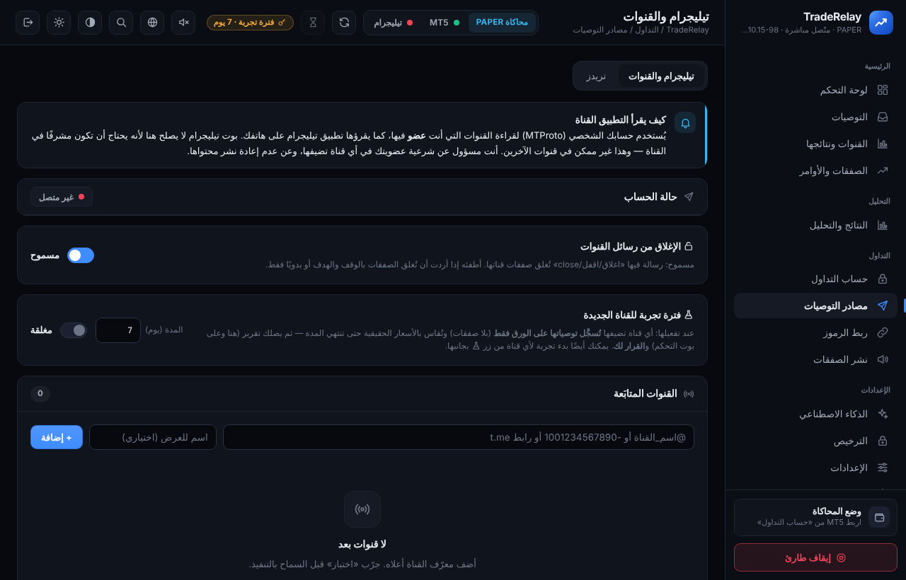
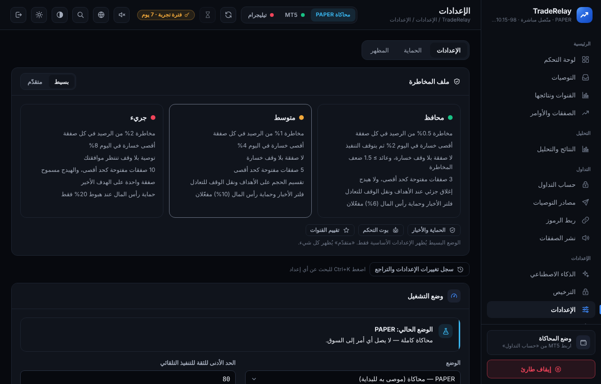
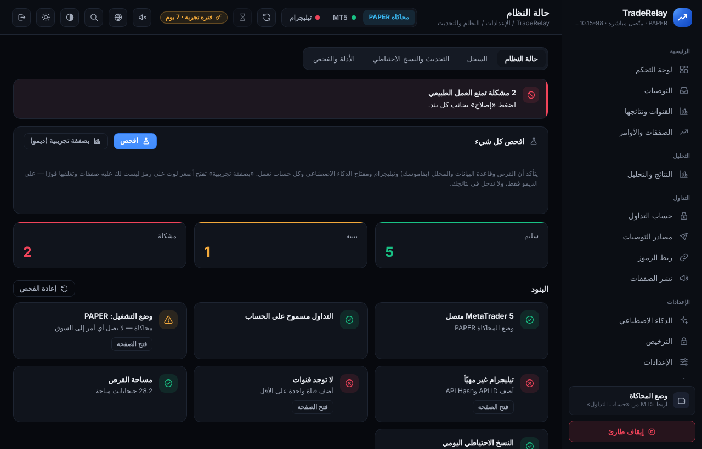

توصيات تيليجرام ← صفقات على MetaTrader 5
تلقائيًا وبإدارة مخاطر
Telegram signals → MetaTrader 5 trades
automatically, with risk control
TradeRelay يقرأ رسائل القنوات بأي صياغة (عربي، إنجليزي، عامية، صور)، ويحوّلها إلى أوامر بالدخول والوقف والأهداف، وينفّذها على حسابك حسب حدود المخاطرة التي تضعها أنت.
TradeRelay reads channel messages in any wording (Arabic, English, mixed, images), turns them into orders with entry, stop loss and targets, and executes them on your account within the risk limits you set.

لماذا TradeRelay؟Why TradeRelay?
مصمَّم لقنوات التوصيات العربية من اليوم الأولBuilt for Arabic signal channels from day one
🧠 يفهم أي صياغة
🧠 Understands any wording
عربي فصيح وعامية وإنجليزي وخليط وإيموجي وأرقام عربية، مع قاموس قابل للتعديل لكل قناة.
Formal Arabic, dialect, English, mixed text, emoji and Arabic numerals, with an editable per-channel dictionary.
🖼️ يقرأ الصور
🖼️ Reads images
توصيات منشورة كصورة؟ يستخرج الأرقام ويتحقق منها قبل التنفيذ.
Signals posted as images? It extracts and sanity-checks the numbers before executing.
🛡️ إدارة مخاطر
🛡️ Risk management
نسبة مخاطرة لكل صفقة، حد خسارة يومي، حماية رأس المال، فلتر الأخبار، وإيقاف طارئ بضغطة.
Risk per trade, daily loss limit, equity protection, news filter, and a one-click emergency stop.
🎯 إدارة الصفقة
🎯 Trade management
إغلاق جزئي عند الأهداف، نقل الوقف للتعادل، وقف متحرك، وتنفيذ تعديلات القناة («اقفل»، «حرّك الوقف»).
Partial closes at targets, break-even, trailing stop, and follow-up commands from the channel ("close", "move SL").
📊 نتائج كل قناة
📊 Per-channel results
نسبة الكسب والربح لكل قناة، وتقرير أسبوعي، لتعرف أي قناة تستحق الثقة.
Win rate and profit per channel plus a weekly report, so you know which channels to trust.
📱 تحكم من الموبايل
📱 Mobile control
بوت تيليجرام خاص بك للتنبيهات والإيقاف والتقارير من أي مكان.
Your own Telegram bot for alerts, stop and reports from anywhere.
🔒 بياناتك على جهازك
🔒 Your data stays local
لا يوجد خادم وسيط لرسائلك أو حساباتك. كلمات المرور لا تغادر جهازك.
No middle server for your messages or accounts. Passwords never leave your computer.
🧪 آمن للبداية
🧪 Safe to start
يبدأ في وضع المحاكاة، ثم الديمو، ولا ينتقل للحساب الحقيقي إلا بقرارك.
Starts in simulation, then demo, and goes live only when you decide.
كيف يعمل؟How it works
جاهز في أقل من نصف ساعةReady in under 30 minutes
ثبّت البرنامج
Install
ملف واحد على ويندوز يجهّز كل شيء وحده.
One file on Windows sets everything up.
اربط تيليجرام
Connect Telegram
بحسابك، واختر القنوات التي أنت عضو فيها.
With your account; pick channels you're a member of.
اربط MT5
Connect MT5
حساب واحد أو عدة حسابات عبر الخبير.
One account, or several via the EA.
اختبر ثم فعّل
Test, then enable
جرّب على المحاكاة والديمو، ثم اسمح بالتنفيذ للقنوات التي تثق بها.
Try on paper and demo, then allow execution for channels you trust.



الباقاتPlans
كل الباقات تبدأ بتجربة مجانية 5 أيام على حساب ديموEvery plan starts with a free 5-day demo trial
الأساسية
Basic
- ✓ قراءة التوصيات المكتوبة وإدارة الصفقاتText signals & trade management
- ✓ إدارة المخاطر والحماية الكاملةFull risk management & protection
- ✓ حساب MT5 واحد1 MT5 account
- ✓ جهاز واحد1 device
- قراءة توصيات الصورImage signals
- الذكاء الاصطناعي (المفسّر والتقارير)AI (interpreter & reports)
- نشر الصفقات على قناتكPublish trades to your channel
الاحترافية
Pro
- ✓ قراءة التوصيات المكتوبة وإدارة الصفقاتText signals & trade management
- ✓ إدارة المخاطر والحماية الكاملةFull risk management & protection
- ✓ حسابين MT52 MT5 accounts
- ✓ جهاز واحد1 device
- ✓ قراءة توصيات الصورImage signals
- ✓ الذكاء الاصطناعي (المفسّر والتقارير)AI (interpreter & reports)
- نشر الصفقات على قناتكPublish trades to your channel
المتكاملة
VIP
- ✓ قراءة التوصيات المكتوبة وإدارة الصفقاتText signals & trade management
- ✓ إدارة المخاطر والحماية الكاملةFull risk management & protection
- ✓ 10 حسابات MT510 MT5 accounts
- ✓ جهازين2 devices
- ✓ قراءة توصيات الصورImage signals
- ✓ الذكاء الاصطناعي (المفسّر والتقارير)AI (interpreter & reports)
- ✓ نشر الصفقات على قناتكPublish trades to your channel
للاشتراك أو أي سؤال: اضغط «اشترك الآن» وهنرد عليك.To subscribe or ask anything, press Subscribe.
أسئلة شائعةFAQ
هل يضمن البرنامج أرباحًا؟
Does it guarantee profits?
لا. البرنامج ينفّذ توصيات القنوات التي تختارها أنت. النتيجة تعتمد على جودة القناة وإعدادات المخاطرة. جرّب على الديمو أولًا.
No. It executes the signals of channels you choose. Results depend on the channel and your risk settings. Test on demo first.
هل يحتاج الجهاز أن يبقى مفتوحًا؟
Must my computer stay on?
نعم، أو استخدم VPS بنظام ويندوز ليعمل 24 ساعة.
Yes — or use a Windows VPS to run 24/7.
هل يعمل مع أي وسيط؟
Does it work with any broker?
يعمل مع أي وسيط يدعم MetaTrader 5، ويربط أسماء الرموز المختلفة (مثل XAUUSD و GOLD) تلقائيًا.
Any broker with MetaTrader 5. Different symbol names (e.g. XAUUSD vs GOLD) are mapped automatically.
هل بياناتي آمنة؟
Is my data safe?
كل شيء يعمل على جهازك. لا نرى رسائلك ولا حساباتك ولا كلمات مرورك. إن فعّلت الذكاء الاصطناعي تُرسل نصوص الرسائل إلى المزوّد الذي تختاره بمفتاحك.
Everything runs on your computer. We never see your messages, accounts or passwords. If you enable AI, message text goes to the provider you choose, with your own key.
ماذا يحدث عند انتهاء الاشتراك؟
What happens when my subscription ends?
يتوقف فتح صفقات جديدة فقط، وتبقى الصفقات المفتوحة تحت الإدارة حتى تُغلق.
Only new trades stop. Open trades keep being managed until they close.
هل أستطيع نقل الترخيص لجهاز آخر؟
Can I move my license to another computer?
نعم، تواصل معنا وأرسل رقم الجهاز الجديد.
Yes — contact us with the new device ID.